Hi, I’m Isa!
Here’s a little peek into my life ^^
About me
I’m Isa, a Product Designer studying Informatics (UX Design) at UT Austin, graduating in May 2028.
I love turning complicated processes into something almost anyone gets at first glance. When I’m not designing, I’m usually baking, crocheting, or playing video games (my favorite type are visual novels)!
Currently
-
Design Director
Texas Product Engineering Organization (TPEO)
-
UX/UI Designer
Longhorn Developers · Sure Walk
-
Design & Web Development Student Tech Assistant
LAITS, UT Austin
Off the clock
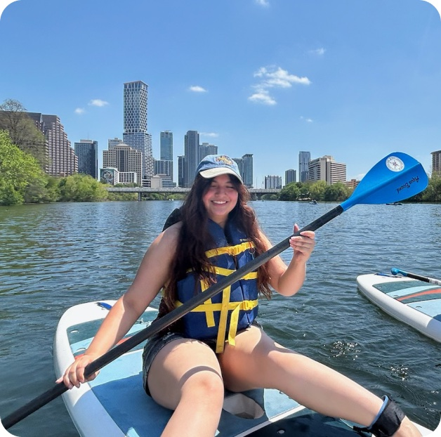
Paddle boarding!
I could not stand up on the board for the life of me... but super fun experience!
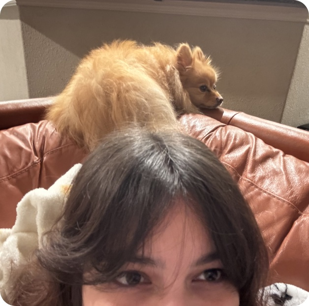
My dog Kiki! :D
She is a miniature German Spitz! And the biggest couch potato I love her so much
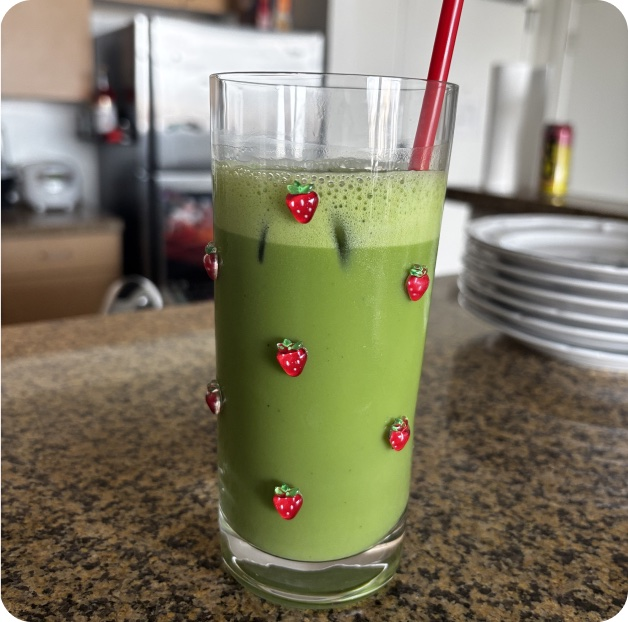
Matcha!
I got REALLY into making matcha over the Summer - white chocolate syrup is the best with matcha fyi
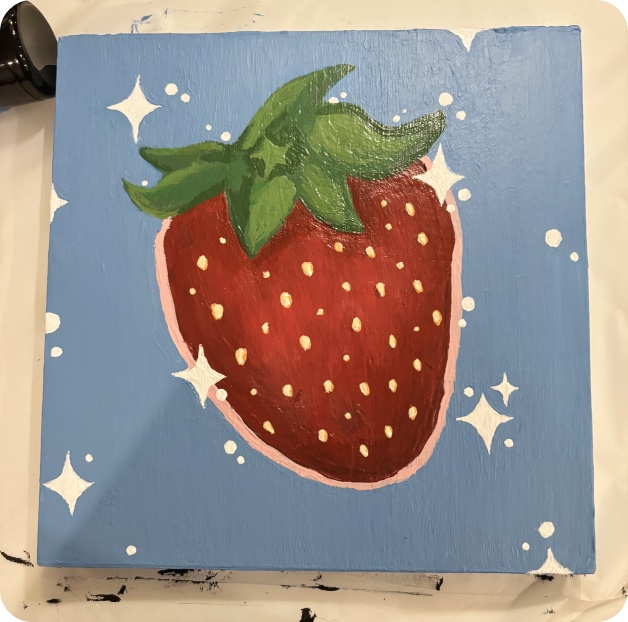
Strawberry painting
This was done with acrylic paint, I really want to get back into painting
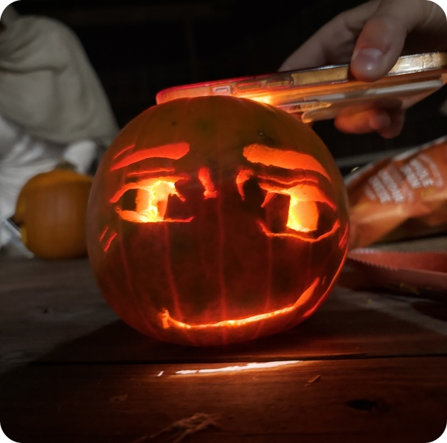
Pumpkin carving
Yes, it’s the Roblox man face
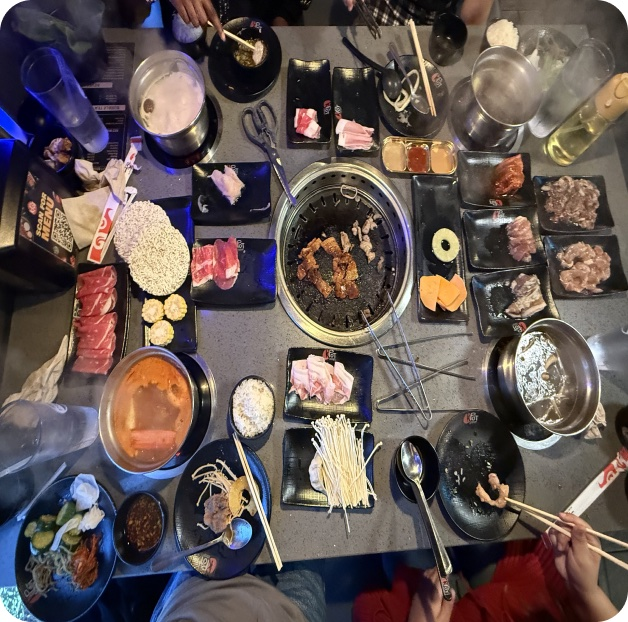
Hot pot & KBBQ!!
I’m a big foodie and yes we did eat everything on the table
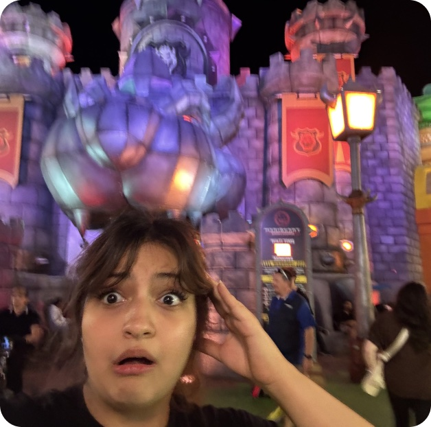
Epic Universe @ Orlando, FL
Bowser’s castle looked SO cool at night! Nintendo World lived up to all my (and my brother’s) hopes and dreams
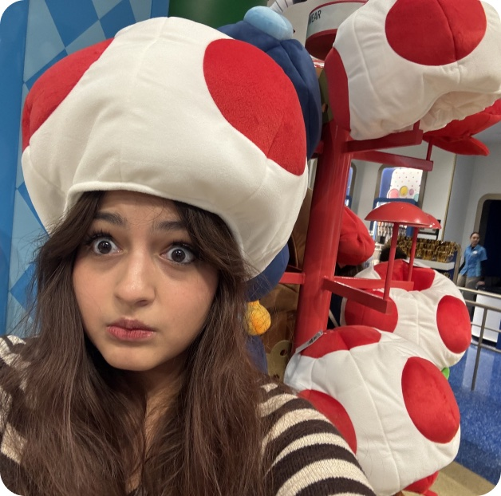
Nintendo World & Universal Studios
I do main Toad in Mario Kart, why yes
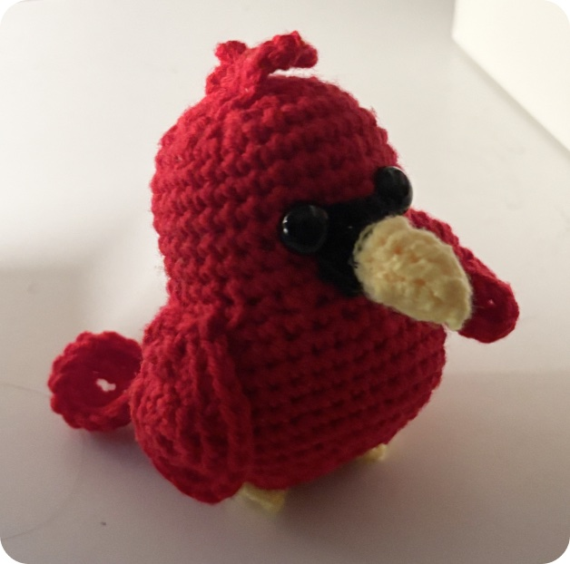
Crochet Cardinal
This was a gift for my mom! I love crocheting <3
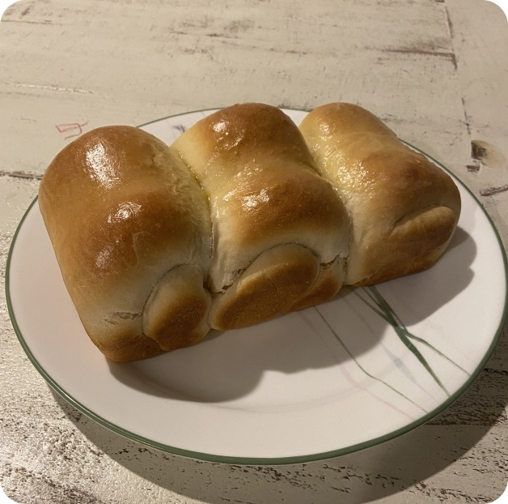
Milk bread
Genuinely the FLUFFIEST bread I’ve ever baked. The egg wash at the end makes such a visual difference too!
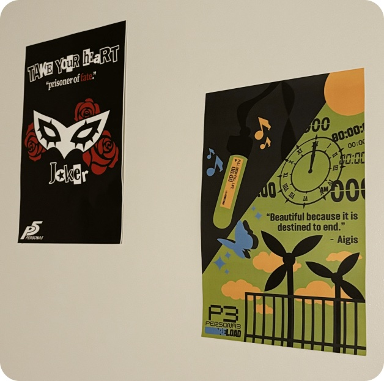
Persona posters
I designed these posters for my favorite video-game series: Persona! Made in Illustrator :>
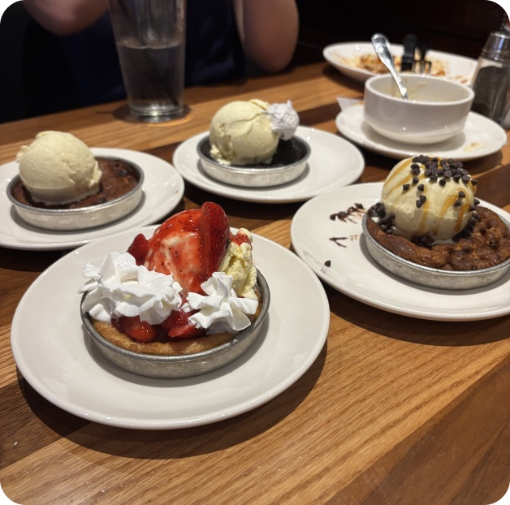
Pizookies!
Mine was the strawberry one! (Are we noticing a pattern...)